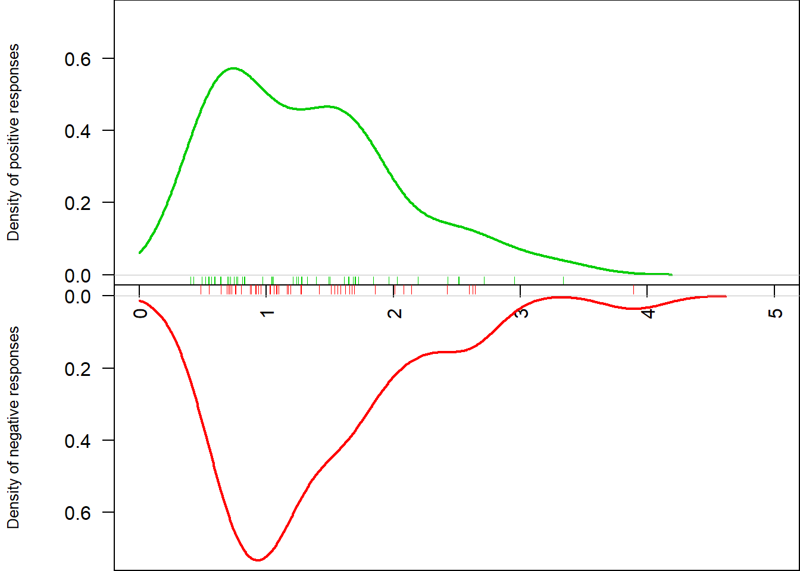
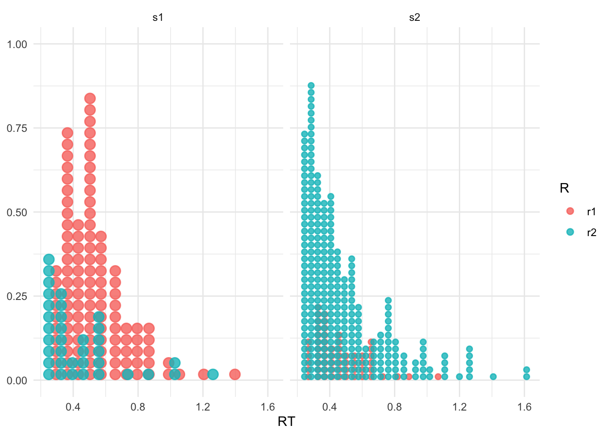

dat <- rwiener(100,2,.3,.5,0)
## plot
plot(dat)
Sheng Long
November 10, 2025
The data was obtained from the supplementary material of Myers, Interian, and Moustafa (2022) at https://osf.io/cpfzj/files.
Drift diffusion models (DDMs) were first introduced by Ratcliff and colleagues [cite]. It is one example of a broader class of computational cognitive models called evidence accumulation models.
For now let’s look at a simple two-choice decision-making model. The DDM makes the following assumptions:
Suppose we collect data from human participants on a simple task with two stimuli, \(s_1\) and \(s_2\), that map to two responses, \(r_1\) and \(r_2\). The task has 500 trials, 150 of which are \(s_1\) and 350 of which are \(s_2\).
Let us read in the data from one participant:
# A tibble: 500 × 3
S R RT
<chr> <chr> <dbl>
1 s1 r1 0.416
2 s1 r2 0.261
3 s1 r1 0.357
4 s1 r1 0.512
5 s1 r1 0.390
6 s1 r1 0.489
7 s1 r1 0.300
8 s1 r1 0.354
9 s1 r1 0.628
10 s1 r1 0.791
# ℹ 490 more rows# A tibble: 4 × 3
# Groups: S, R [4]
S R n
<chr> <chr> <int>
1 s1 r1 114
2 s1 r2 36
3 s2 r1 61
4 s2 r2 289The correct response is responding r1 for stimulus s1 and r2 for stimulus r2.
We can plot the distribution of response time:

Myers, Interian, and Moustafa (2022) give a pretty detailed introduction, but they lack the mathematical equation I needed to start building the model in brms. I’ve been following their paper until the part of Bayesian modeling, and checked their code as well. Apparently they are using some packaged called DMC…? Unclear which specific package they’re calling though1, cause the code just had source(dmc/dmc.R). Truth be told I just wanted to see what is the link function and the likelihood function at this point …
Nevertheless, guess what? brms does implement the Wiener diffusion model with parameters for boundary separation alpha, non-decision time tau, bias beta, and drift rate delta. Onwards to modelling!2 Also as a todo to myself — might be interesting to see how Wiener process models differ than/similar to Gaussian process models.
2 There are also other blog posts, such as this one, that talks about using brms to perform Wiener model analysis.
1 I suspect it’s this one…
Before we can fit the model in brms we need to first intall the RWiener package. Also, in the documentation of brms, it says:
Family
wienerprovides an implementation of the Wiener diffusion model. For this family, the main formula predicts the drift parameter ‘delta’ and all other parameters are modeled as auxiliary parameters.
First specify the formula for the drift parameter delta:
Get a sense of the default priors:
prior class coef group resp dpar nlpar lb ub tag source
(flat) b default
(flat) b Ss1 (vectorized)
(flat) b Ss2 (vectorized)
(flat) b bias default
(flat) b Ss1 bias (vectorized)
(flat) b Ss2 bias (vectorized)
(flat) b bs default
(flat) b Ss1 bs (vectorized)
(flat) b Ss2 bs (vectorized)
(flat) b ndt default
(flat) b Ss1 ndt (vectorized)
(flat) b Ss2 ndt (vectorized)All of these are flat priors by default. We can set them to be something weakly informative:
For those who are more familiar with Stan we can also examine the stan code behind this brms formula and prior:
// generated with brms 2.23.0
functions {
/* Wiener diffusion log-PDF for a single response
* Args:
* y: reaction time data
* dec: decision data (0 or 1)
* alpha: boundary separation parameter > 0
* tau: non-decision time parameter > 0
* beta: initial bias parameter in [0, 1]
* delta: drift rate parameter
* Returns:
* a scalar to be added to the log posterior
*/
real wiener_diffusion_lpdf(real y, int dec, real alpha,
real tau, real beta, real delta) {
if (dec == 1) {
return wiener_lpdf(y | alpha, tau, beta, delta);
} else {
return wiener_lpdf(y | alpha, tau, 1 - beta, - delta);
}
}
}
data {
int<lower=1> N; // total number of observations
vector[N] Y; // response variable
array[N] int<lower=0,upper=1> dec; // decisions
int<lower=1> K; // number of population-level effects
matrix[N, K] X; // population-level design matrix
int<lower=1> K_bs; // number of population-level effects
matrix[N, K_bs] X_bs; // population-level design matrix
int<lower=1> K_ndt; // number of population-level effects
matrix[N, K_ndt] X_ndt; // population-level design matrix
int<lower=1> K_bias; // number of population-level effects
matrix[N, K_bias] X_bias; // population-level design matrix
int prior_only; // should the likelihood be ignored?
}
transformed data {
real min_Y = min(Y);
}
parameters {
vector[K] b; // regression coefficients
vector[K_bs] b_bs; // regression coefficients
vector[K_ndt] b_ndt; // regression coefficients
vector[K_bias] b_bias; // regression coefficients
}
transformed parameters {
// prior contributions to the log posterior
real lprior = 0;
lprior += cauchy_lpdf(b | 0, 5);
lprior += normal_lpdf(b_bs | 1.5, 1);
lprior += normal_lpdf(b_ndt | 0.2, 0.1);
lprior += normal_lpdf(b_bias | 0.5, 0.2);
}
model {
// likelihood including constants
if (!prior_only) {
// initialize linear predictor term
vector[N] mu = rep_vector(0.0, N);
// initialize linear predictor term
vector[N] bs = rep_vector(0.0, N);
// initialize linear predictor term
vector[N] ndt = rep_vector(0.0, N);
// initialize linear predictor term
vector[N] bias = rep_vector(0.0, N);
mu += X * b;
bs += X_bs * b_bs;
ndt += X_ndt * b_ndt;
bias += X_bias * b_bias;
for (n in 1:N) {
target += wiener_diffusion_lpdf(Y[n] | dec[n], bs[n], ndt[n], bias[n], mu[n]);
}
}
// priors including constants
target += lprior;
}
generated quantities {
}Now we can fit the model: